~Ingredientes:
Massa frolla
･*:.｡.･🍎 Tudo sobre maçãs🍎･.｡.:*･
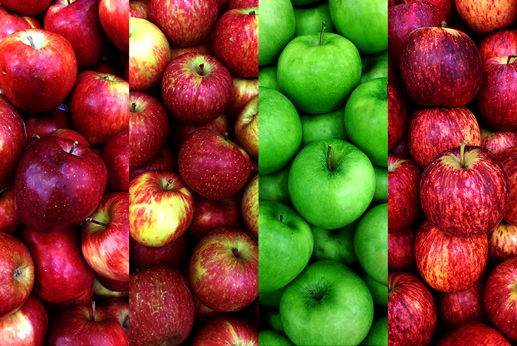
•*¨*•.¸¸☆*･ﾟOrigemﾟ･*☆¸¸.•*¨*•
A macieira tem origem na Ásia Central, especialmente no Cazaquistão, e é uma das árvores cultivadas mais antigas.
Suas frutas foram sendo melhoradas ao longo de milhares de anos. Há relatos de que Alexandre, o Grande levou variedades de maçãs para a Europa. As maçãs eram muito importantes
como alimento na Ásia e Europa, principalmente no inverno.
Elas chegaram à América do Norte no século XVII com colonizadores europeus, e rapidamente se espalharam. No século XIX, já
existiam centenas de variedades. No século XX, avanços como irrigação e transporte impulsionaram a produção em larga escala, especialmente nos EUA. Antigamente, as
maçãs eram armazenadas em locais subterrâneos. Hoje, usa-se tecnologia de "atmosfera controlada" para conservá-las frescas o ano todo.
•*¨*•.¸¸☆*･ﾟPlantioﾟ･*☆¸¸.•*¨*•
As macieiras podem ser plantadas a partir de sementes, enxertia ou mudas.
As mudas são preferíveis, com o período ideal de plantio ocorrendo entre junho e agosto.
Vídeo explicando sobre o plantio da maçã:
•*¨*•.¸¸☆*･ﾟÉpocaﾟ･*☆¸¸.•*¨*•
As macieiras começam a crescer na primavera após atingirem suas horas de frio, que variam de 800 a 1 horas,
seguidas por cerca de 300 horas de clima quente. As folhas aparecem primeiro, e as flores surgem 3 a 4 semanas depois.
•*¨*•.¸¸☆*･ﾟFloraçãoﾟ･*☆¸¸.•*¨*•
A data de floração pode mudar a cada ano, dependendo das temperaturas de inverno e primavera, podendo haver uma diferença de mais de duas semanas na floração até dentro da mesma região.
Regiões mais quentes, com invernos curtos, costumam florescer mais cedo; por exemplo, no oeste da Carolina do Norte, isso ocorre em abril, enquanto em Minnesota, só acontece em maio.
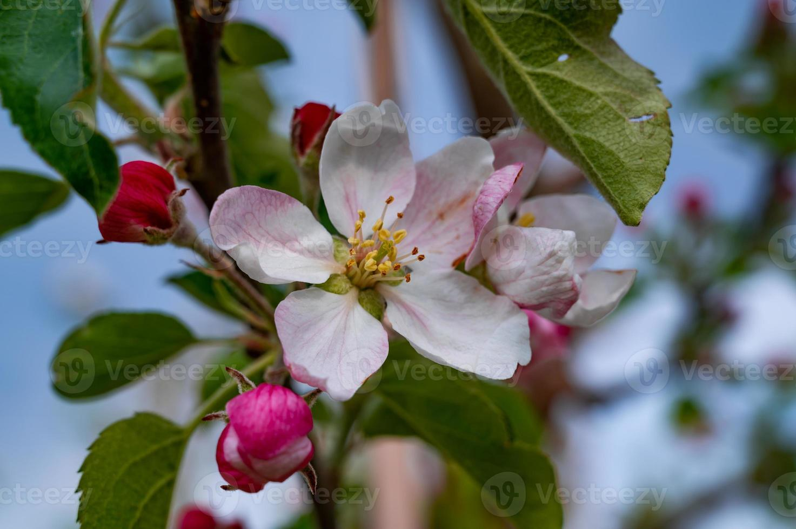
•*¨*•.¸¸☆*･ﾟEspéciesﾟ･*☆¸¸.•*¨*•
Há mais de 7 500 espécies e variedades de maçãs. As diferentes espécies encontram-se em climas temperados e subtropicais, já que macieiras não florescem em áreas tropicais, pois necessitam de
um número considerável de horas de frio, que é variável em função da variedade cultivada. As variedades da família da Gala, por exemplo, necessitam de um inverno com cerca de
700 horas de frio (temperatura abaixo de 7.2 °C) para terem o rendimento ideal na colheita.
Aqui estão as espécies mais conhecidas e consumidas:
¸.*❦*.¸ Gala 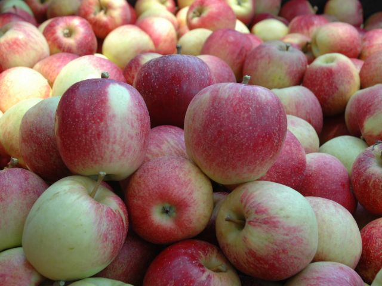 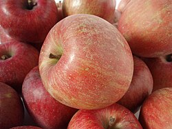 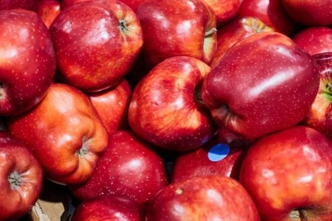 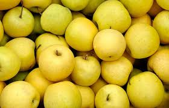 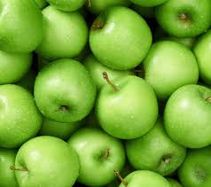 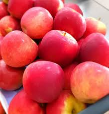 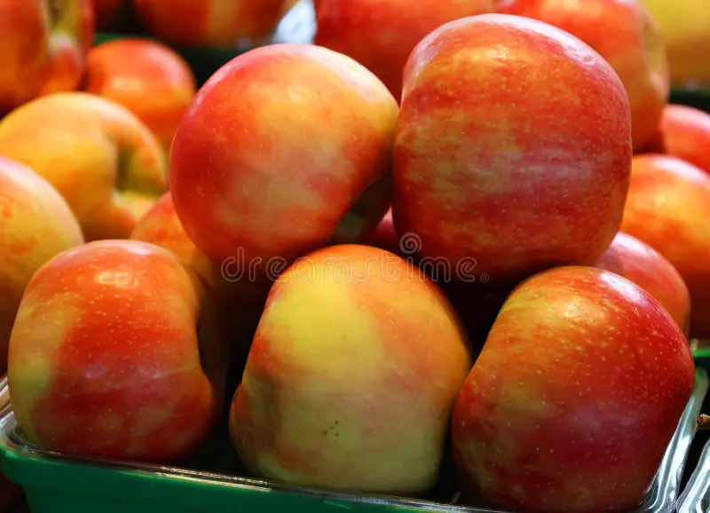 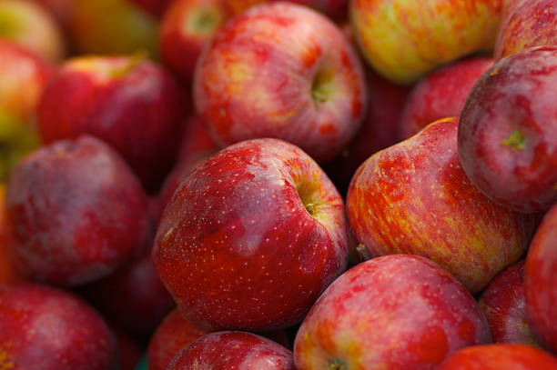 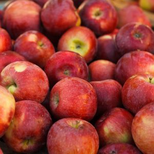 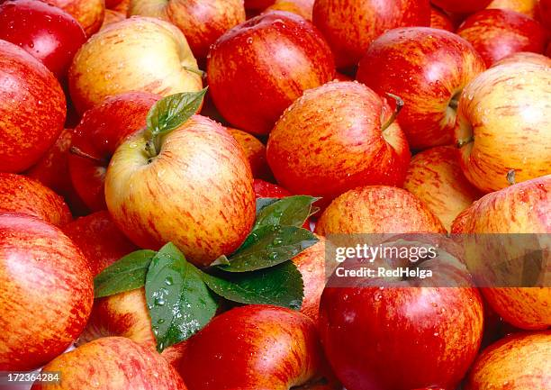
Originária da Nova Zelândia, é talvez a mais popular no Brasil. É doce, tem a casca fina e polpa macia.
É excelente para consumo in natura e para crianças, por ser menor e bem palatável.
¸.*❦*.¸ Fuji
De origem japonesa, divide com a Gala o topo do mercado brasileiro. Ela é mais firme, crocante e possui um equilíbrio
perfeito entre o doce e o ácido. Tem uma durabilidade excelente na geladeira.
¸.*❦*.¸ Red Delicious (Maçã Argentina)
Muito famosa por sua cor vermelho vibrante e formato de "coração". Embora seja visualmente icônica, sua polpa é mais farelenta e a casca é grossa.
É a clássica "maçã da Branca de Neve".
¸.*❦*.¸ Golden Delicious
A "maçã amarela" mais famosa do mundo. É doce, suave e muito versátil: ótima para comer pura, mas também excelente para tortas e purês, pois mantém
bem o sabor após o cozimento.
¸.*❦*.¸ Granny Smith (Maçã Verde)
Fácil de identificar pela cor verde intensa. É a favorita de quem gosta de frutas ácidas e crocantes. É a padrão ouro para a culinária, especialmente na famosa Apple Pie americana,
pois sua acidez equilibra o açúcar do recheio.
¸.*❦*.¸ Pink Lady (Cripps Pink)
Uma das primeiras a serem vendidas sob uma marca registrada. Tem um tom rosado único e um sabor que mistura doçura com uma efervescência ácida.
É considerada uma maçã "premium" pelo seu sabor complexo.
¸.*❦*.¸ Honeycrisp
Como o nome sugere, sua principal característica é a crocância extrema e o sumo abundante. Tornou-se uma febre nos Estados Unidos nos
últimos anos por ser incrivelmente refrescante.
¸.*❦*.¸ Braeburn
Uma maçã clássica para todo tipo de uso. Tem um sabor mais robusto e picante, sendo muito utilizada tanto para comer direto da
fruteira quanto para assar, já que não desmancha facilmente no forno.
¸.*❦*.¸ McIntosh
Muito popular no Hemisfério Norte (especialmente no Canadá e Nova Iorque). Tem a casca vermelha com manchas verdes e uma
polpa branca e macia que "derrete" ao ser cozida, sendo a base ideal para o molho de maçã (applesauce).
¸.*❦*.¸ Jonagold
Um cruzamento entre a Jonathan e a Golden Delicious. Ela herda o tamanho grande e a doçura da Golden com a acidez da Jonathan.
É muito apreciada por chefs de cozinha pela sua versatilidade.
---
Curiosidade: No Brasil, o mercado é amplamente dominado pela Gala e pela Fuji, que juntas representam cerca de 90% da
produção nacional devido à excelente adaptação ao clima da região Sul.
•*¨*•.¸¸☆*･ﾟComposição nutricionalﾟ･*☆¸¸.•*¨*•
A maçã é uma fruta rica em fibras, principalmente a pectina, que ajuda a controlar o colesterol, melhora o funcionamento do intestino e
contribui para o emagrecimento. Ela também contém vitaminas do complexo B (B1, B2 e niacina) e minerais importantes, como potássio, ferro e fósforo. O potássio ajuda a eliminar o excesso de sódio e líquidos do corpo.
Além disso, a maçã possui antioxidantes, como a quercetina, que ajudam a proteger o organismo, prevenir doenças e melhorar a saúde do coração e da circulação sanguínea.
Por isso, é considerada uma fruta muito benéfica para o funcionamento geral do corpo.
| Porção de 100g | Quantidade | %VDiários |
|---|---|---|
| Valor energético | 62,5Kcal = 137Kj | 3% |
| Carboidratos | 16,6g | 6% |
| Proteínas | 0,2g | 0% |
| Gorduras saturadas | 0,1g | 0% |
| Fibra alimentar | 2mg | 8% |
| Cálcio | 3,4mg | 0% |
| Vitamina C | 1,5mg | 3% |
| Vitamina B6 | 0mg | 0% |
| Manganês | 0mg | 0% |
| Magnésio | 4,9mg | 2% |
| Fósforo | 11,4mg | 2% |
| Ferro | 0,1mg | 1% |
| Potássio | 117,5g | - |
| Lipídios | 0,3g | - |
| Cobre | 0ug | - |
| Tiamina B1 | 0,1mg | 7% |
| Zinco | 0mg | 0% |
| Sódio | 1,3mg | - |
*%Valores diários com base em uma dieta de 2.000 Kcal ou 8.400kj.
Seus valores diários podem ser maiores ou menores dependendo de suas necessidades.
•*¨*•.¸¸☆*･ﾟBenefícios do consumoﾟ･*☆¸¸.•*¨*•
•*¨*•.¸¸☆*･ﾟReceitas com maçãﾟ･*☆¸¸.•*¨*•
¸.*❦*.¸ Crostata de maçã ¸.*❦*.¸
~Ingredientes:
Massa frolla
¸.*❦*.¸ Mini torta de maçã ¸.*❦*.¸
~Ingredientes:

Recheio
¸.*❦*.¸ Crumble de maçã ¸.*❦*.¸

~Ingredientes:
Farofa
•*¨*•.¸¸☆*･ﾟBibliografiasﾟ･*☆¸¸.•*¨*•
https://pt.wikipedia.org/wiki/Ma%C3%A7%C3%A3 - Para informações gerais sobre a maçã
https://blog.syngentadigital.ag/cultura_maca/#h-plantio - Informações sobre o plantio
https://apples.extension.org/timing-of-apple-tree-bloom/ - Informações sobre a época de floração
https://www.chicogranjeiro.eco.br/produtos/maca-gala-tc1bh/ - Tabela nutricional
https://www.estadao.com.br/paladar/caderno-de-receitas/dia-da-maca-veja-5-sobremesas-que-levam-a-fruta/?srsltid=AfmBOooTwkhh3aP3f2wIMoinJdrhaloppdZkGjh95kF0BUudjo50iXJE
- Receitas